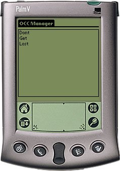

 One Click Clipping is a small enhancement to Palm Query Application technology. A normal Palm Query Application (PQA) requires some sort of user interaction before the clipping is served. This interaction can be as advanced as filling out a form to as simple as clicking one link. This last case is a click too much - One Click Clipping addresses this.
One Click Clipping runs on any Palm OS 3.1 or better device with wireless capabilities (Palm VII or any newer Palm OS enabled device with the Mobile Internet Kit).
One Click Clipping is free software. If you feel like it you may donate any amount you like to my PayPal account.
Changelog:
v1.2 (2002-12-13) Added the ability to create OCCs in OCCMan. Added '-h' (help text) switch to OCCMake. v1.1 (2002-03-01) Fixed some memory leaks in OccMan. v1.0 (2002-02-19) First release.